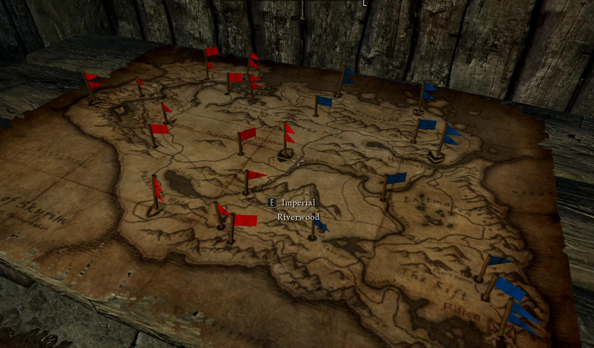
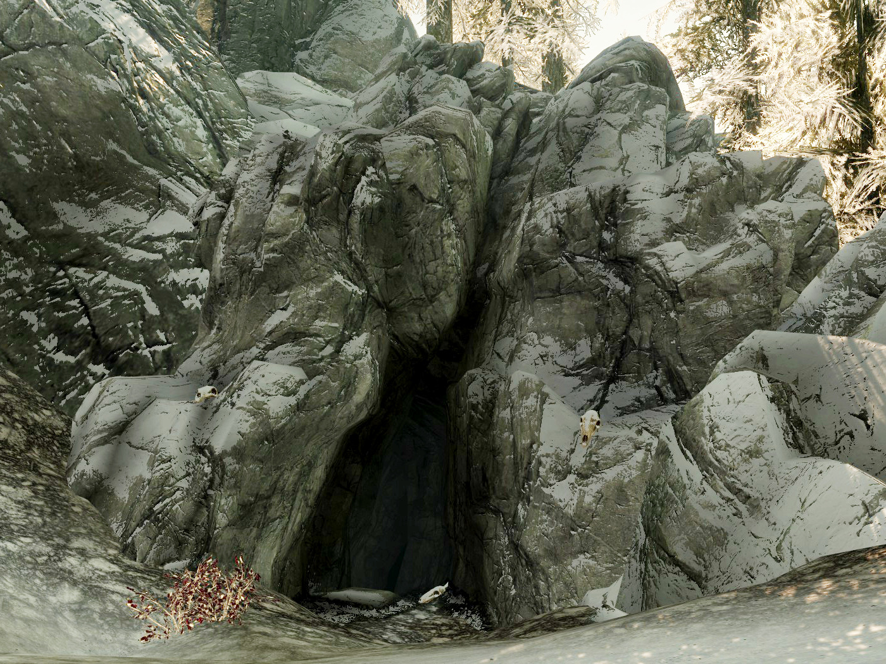

Solitude Examiner
Join the War

Skyrim needs the Stormcloaks like a farm needs a Skeever infestation. Join us and end us so we can focus on ending and rebuilding our homes.
Help Wanted
- Roggvir's execution Date Set, save the date!
- Bards College seeks new students to train in the Bardic Ways
- Taarie seeks individuals to model outfits
War Watch
A Dragon appears in Helgen
Terror struck Helgen earlier as a dragon assaulted the small community of Helgen, reports state that Ulfric was present but it is not yet certain whether or not Ulfric was in control of the Dragon
Ulfric, the muderous rebellion leader that killed the former high king of Skyrim with dishonerable use of the Voice, continues to walk free in Windhelm, but work is being done every day to push for a united Skyrim. Thalmor continue to offer magnanimous support to our cause, and assure us their complete support in ending the rebellion and rebuilding Skyrim to it's former glory.
Mystery at Wolfskull Cave
Dragon Bridge resident Varnius Junius has arrived to Solitude intent on asking Jarl Elsif to investigate the strange disappearances occuring near Wolfskull Cave
The Cave, located to the south, has been noted to be the home to many bandits, but recently unconfirmed reports of Necromancers have been cropping up in the area.
Jarl Elsif for her part initially commanded an entire legion to scour the area, however upon the advice of her council Sybille, reduced the amount to a few more troops and a specialized scout to go through the caves and investigate the area.